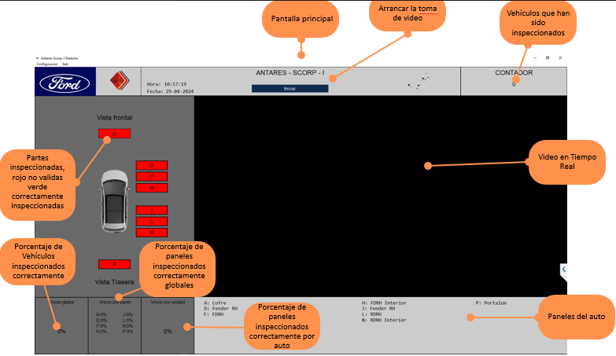

Manual de Usuario: Sistema de visión SCORP-II
Objetivo del Manual
El propósito de este manual es brindarle una mejor experiencia al usuario al momento de configurar su sistema de visión por computadora, así como ofrecer soporte para instalación y manipulación.
Descripción General del Sistema
SCORP-II es un sistema inálambrico de visión que incluye una cámara IP. Además, cuenta con una unidad central de procesamiento (CPU) donde se lleva a cabo el análisis del vídeo. El algoritmo funciona de tal manera que el operario debe inspeccionar una parte específica de la carrocería durante un período de tiempo determinado para validar la inspección. Este análisis puede visualizarse en tiempo real en el monitor de la CPU central.

Modo de empleo
Colocación de equipo
El operador del sistema de grabación debe colocarse, primeramente, el centro de control SCORP-II (que incluye batería y unidad de procesamiento) sobre la cadera y la cámara sobre la cabeza, utilizando la diadema con la que cuenta, como lo muestra el siguiente video.
La duración de la batería es de aproximadamente 8 horas y utiliza un cargador de carga rápida tipo C.
Una vez puesto el equipo, se debe calibrar la cámara pues eso depende de la altura del operador.
Procedemos a encender el centro de procezamiento (dispositivo que se coloca a la altura de la cadera), encendemos la computadora con el software de SCORP-II y conectamos mediante WiFi la cámara para comenzar la inspección.
Interfaz de usuario
A continuación le explicamos la interfaz de SCORP-II:
- Lo primero que se ve al ingresar a la página es el inicio de sesión, para el cual deberá ingresar un usuario y contraseña previamente proporcionados
- Posteriormente, verá la pantalla que permite calibrar la cámara, una vez calibrada puede comenzar con el arranque del sistema.
- Al momento de presionar "Iniciar SCORP-II, le aparecerá la siguiente página donde podrá inicar a inspeccionar vehículos. 
- Como se muestra en la imagen, con SCORP-II puede ver el porcentaje de paneles inspeccionados tanto globalmente como por vehículo mediante video en tiempo real.
Mantenimiento
Si lo que necesita es abrir el dispositivo para reemplazar componentes o meramente inspeccionar, en los siguientes videos le mostramos paso a paso cómo realizarlo adecuadamente
Le sugerimos tener a la mano:
- Desarmador de cruz
- Cuña o alguna pieza plástica delgada y pequeña para hacer palanca
- Dados pequeños
- Pinzas
Una vez realizado el reemplazo de componentes o inspección, le mostramos cómo volver a armar su SCORP-II en los siguientes videos:
Contactos de Soporte
Correo electrónico: irisinsighttechgroup@gmail.com
Número telefónico: +52 55 31 00 6267